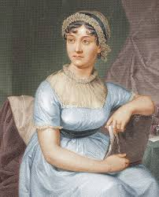

Biografía de la escritora
fue una novelista británica que vivió durante la época georgiana. La ironía que emplea para dotar de comicidad a sus novelas hace que Jane Austen sea considerada entre los clásicos de la novela inglesa,1 a la vez que su recepción va, incluso en la actualidad, más allá del interés académico, siendo sus obras leídas por un público más amplio.
Nació en la rectoría de Steventon (Hampshire). Su familia pertenecía a la burguesía agraria, contexto del que no salió y en el que sitúa todas sus obras, siempre en torno al matrimonio de su protagonista. La candidez de las obras de Austen, sin embargo, es meramente aparente, si bien puede interpretarse de varias maneras. Los círculos académicos siempre han considerado a Austen como una escritora conservadora, mientras que la crítica feminista más actual apunta que en su obra puede apreciarse una novelización del pensamiento de Mary Wollstonecraft sobre la educación de la mujer.
Ha sido llevada al cine en diferentes ocasiones, algunas veces reproducidas de forma fiel, como el clásico Más fuerte que el orgullo de 1940 dirigido por Robert Z. Leonard y protagonizada por Greer Garson y Laurence Olivier y en otras haciendo adaptaciones a la época actual, como es el caso de Clueless, adaptación libre de Emma. Otras versiones son la de Sentido y sensibilidad, de 1995; Mansfield Park, de 2000, y las de Orgullo y prejuicio en 2004 (dirigida por Gurinder Chadha) y en 2005 (dirigida por Joe Wright). Sin embargo, la versión más fiel y perfecta que hasta ahora se ha hecho del libro de Orgullo y prejuicio es la serie que presentó la BBC protagonizada por Colin Firth y Jennifer Ehle. El interés que la obra de Jane Austen sigue despertando hoy en día muestra la vigencia de su pensamiento y la influencia que ha tenido en la literatura posterior. Su vida también ha sido llevada al cine con la película Becoming Jane (2007).
Bibliografía
| Año | obra |
|---|---|
| 1811 | Sense and Sensibility |
| 1813 | Pride and Prejudice |
| 1814 | Mansfield Park |
| 1815 | Emma |
| 1818, obra póstuma | Northanger Abbey |
| 1818, obra póstuma | Persuasion |
Obras cortas
- Lady Susan
- The Watsons
- Sanditon